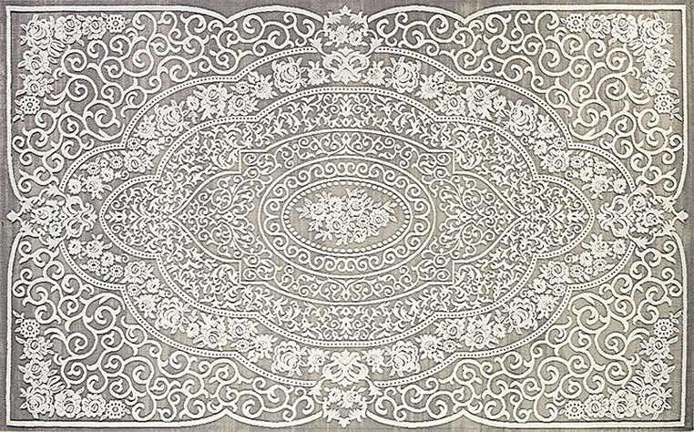

HALICI

İpek İran Halısı
Video, size görüşünüzü kanıtlamak için güçlü bir yol sunar. Çevrimiçi Video'ya tıkladığınızda, eklemek istediğiniz videoya ait ekleme kodunu yapıştırabilirsiniz. Belgenize en iyi uyan videoyu çevrimiçi olarak aramak için bir anahtar sözcük de yazabilirsiniz.
Word, belgenizin profesyonelce üretilmiş görünmesini sağlamak için birbirini tamamlayan üst bilgi, alt bilgi, kapak sayfası ve metin kutusu tasarımları sağlar. Örneğin, birbiriyle uyumlu bir kapak sayfası, başlık ve kenar çubuğu ekleyebilirsiniz. Ekle'ye tıklayın ve ardından farklı galerilerden eklemek istediğiniz öğeleri seçin.

Yün Merinos Halı
Video, size görüşünüzü kanıtlamak için güçlü bir yol sunar. Çevrimiçi Video'ya tıkladığınızda, eklemek istediğiniz videoya ait ekleme kodunu yapıştırabilirsiniz. Belgenize en iyi uyan videoyu çevrimiçi olarak aramak için bir anahtar sözcük de yazabilirsiniz.
Word, belgenizin profesyonelce üretilmiş görünmesini sağlamak için birbirini tamamlayan üst bilgi, alt bilgi, kapak sayfası ve metin kutusu tasarımları sağlar. Örneğin, birbiriyle uyumlu bir kapak sayfası, başlık ve kenar çubuğu ekleyebilirsiniz. Ekle'ye tıklayın ve ardından farklı galerilerden eklemek istediğiniz öğeleri seçin.

İpek Hint Dokuma Halı
Video, size görüşünüzü kanıtlamak için güçlü bir yol sunar. Çevrimiçi Video'ya tıkladığınızda, eklemek istediğiniz videoya ait ekleme kodunu yapıştırabilirsiniz. Belgenize en iyi uyan videoyu çevrimiçi olarak aramak için bir anahtar sözcük de yazabilirsiniz. Word, belgenizin profesyonelce üretilmiş görünmesini sağlamak için birbirini tamamlayan üst bilgi, alt bilgi, kapak sayfası ve metin kutusu tasarımları sağlar. Örneğin, birbiriyle uyumlu bir kapak sayfası, başlık ve kenar çubuğu ekleyebilirsiniz. Ekle'ye tıklayın ve ardından farklı galerilerden eklemek istediğiniz öğeleri seçin.